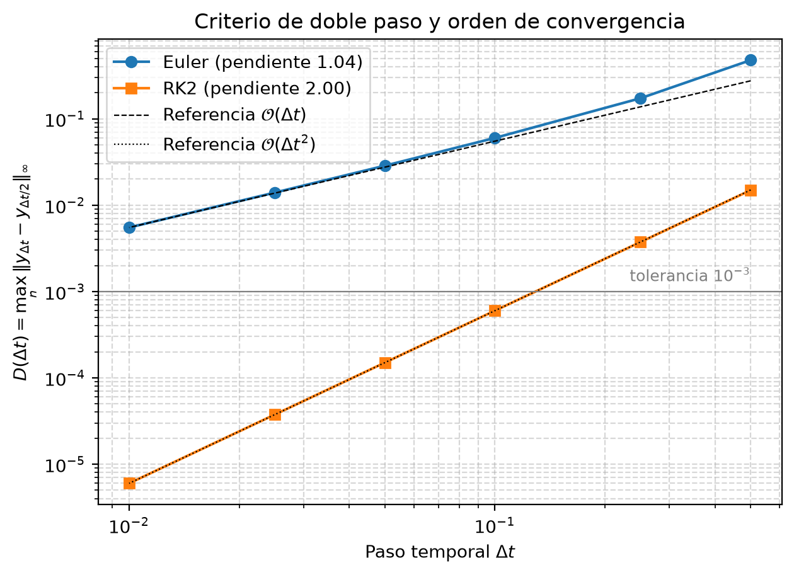
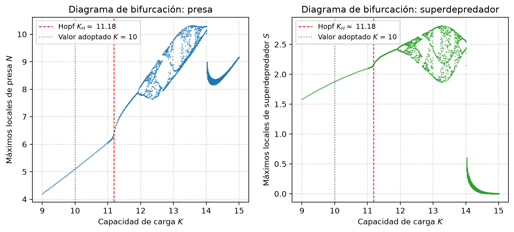

Tres EDOs no lineales y acopladas, sin solución analítica: hay que aproximarlas numéricamente.
Lotka-Volterra no alcanza: supone presa sin límite, ataque sin saturación y órbitas neutras.
Forma vectorial (PVI): \(\mathbf{y}' = \mathbf{f}(t,\mathbf{y})\), con \(\mathbf{y} = (N, P, S)^T\) y \(\mathbf{y}(0) = (8,\ 2,\ 1)\).
El depredador solo persiste si \(b\cdot \max F_{PN} > m\).
\(b\cdot\max F_{PN} - m = 0.107 - 0.2 < 0\): ✗ P y S se extinguen, el sistema va a \((90, 0, 0)\).
✓ Coexistencia estable en \((5.105,\ 4.308,\ 1.878)\).
| Parámetro | \(K\) | \(m\) | \(q\) | \(b_1\) | \(b_3\) | Por qué |
|---|---|---|---|---|---|---|
| Original | 100 | 0.2 | 0.1 | 0.5 | 0.5 | \(b_1, m\): P puede crecer · \(b_3, q\): S puede sostenerse · \(K\): evita la paradoja del enriquecimiento |
| Adoptado | 10 | 0.1 | 0.12 | 0.1 | 0.1 |
\(\mathbf{y}' = \mathbf{f}(t,\mathbf{y})\), \(\mathbf{y}(0)=\mathbf{y}_0\), en \(t\in[0, 250]\).
Euler explícito y Heun (RK2): un paso, una corrección. Malla \(t_n = n\,\Delta t\).
Orden observado y criterio de doble paso \(\Rightarrow\) elección justificada de \(\Delta t\).
Jacobiano por diferencias centradas, equilibrio por Newton, autovalores, Hopf por bisección, Lyapunov.
Coexistencia estable, \(\Delta t = 0.05\) y mapa de la región caótica a evitar.
euler_cosner.py y rk2_cosner.py implementan los métodos; generar_figuras.py los reutiliza para todo el análisis. Cada función está referenciada a su sección del informe.
Las simulaciones de esta presentación corren en vivo con el mismo esquema y reproducen los números de Python (por ejemplo, la tabla de doble paso, dígito por dígito).
¿Por qué no iterar el corrector? Repetirlo converge a la regla del trapecio implícita, que también es de orden 2:
| Iteraciones | \(y_{n+1}\) | Evaluaciones de \(f\) |
|---|---|---|
| 1 (Heun) | 1.607 | 2 |
| 2 | 1.659 | 3 |
| 3 | 1.666 | 4 |
| \(\infty\) (trapecio) | 1.667 | \(\infty\) |
Iterar cambia la constante del error, no el orden; cada iteración cuesta una evaluación más. Solución exacta: 1.708.
Con \(z = \lambda\,\Delta t\), cada paso multiplica el error por \(R(z)\). Es estable si \(|R(z)| \le 1\):
● equilibrio interior \((-0.1433,\ -0.0386 \pm 0.1033i)\) · ■ borde \(N\)–\(P\) \((-0.0137 \pm 0.247i)\). Límites en \(\mathbf{y}^*\): Euler \(\Delta t \le 6.35\), RK2 \(\Delta t \le 13.96\).
| \(\Delta t\) | \(D\) Euler | \(D\) RK2 | Orden local RK2 |
|---|---|---|---|
| 0.5 | 4.77·10⁻¹ | 1.49·10⁻² | 1.99 |
| 0.25 | 1.73·10⁻¹ | 3.74·10⁻³ | 2.00 |
| 0.1 | 6.00·10⁻² | 5.99·10⁻⁴ | 2.00 |
| 0.05 | 2.86·10⁻² | 1.50·10⁻⁴ | 2.00 |
| 0.025 | 1.40·10⁻² | 3.75·10⁻⁵ | 2.00 |
| 0.01 | 5.50·10⁻³ | 5.99·10⁻⁶ | — |
de margen bajo la tolerancia con RK2 y 5000 pasos
evaluaciones extra que necesitaría Euler para igual precisión


Equilibrio estable (adoptado \(K = 10\)).
Bifurcación de Hopf (por bisección): nace un ciclo límite.
Duplicación de período.
Caos, con ventanas periódicas.
Colapso del superdepredador.
Cada cambio integra el modelo completo con RK2 (\(\Delta t = 0.05\), 120 000 pasos) en el navegador.
| \(K\) | 10 | 11.5 | 12 | 12.25 | 13.5 |
|---|---|---|---|---|---|
| \(\lambda_{\max}\) | −0.0383 | +0.0001 | −0.0001 | +0.0056 | +0.0092 |
| Régimen | equilibrio | ciclo | período 2 | caos | caos |
Euler y Heun implementados. Heun con una sola corrección logra orden 2 con 2 evaluaciones por paso.
Doble paso con RK2: \(D = 1.5\cdot10^{-4} < 10^{-3}\). Euler necesitaría ~14 veces más cálculo, y con pasos grandes inventa dinámicas (extinción espuria de \(S\)).
Los parámetros originales no permitían la coexistencia; la calibración, dentro de los rangos de la consigna, da un foco estable.
Por encima de \(K_H\): ciclo límite, duplicación de período y caos (\(\lambda > 0\)). El sistema opera fuera de la zona caótica.
rk2_cosner.py · resolver_rk2: el bucle temporal (extracto real del archivo)| Función | Sección |
|---|---|
sistema_cosner, F_PN… | 2.1 – 2.2 |
resolver_euler | 3.1 |
resolver_rk2 | 3.2 |
equilibrio_newton | 2.4 |
paso_maximo_estable | 3.3 |
diferencia_doble_paso | 3.4, 4.4 |
K_critico_hopf | 4.5 |
exponente_lyapunov | 3.5, 4.5 |
Reproducir todo: python docs/generar_figuras.py
Iterar el corrector es una iteración de punto fijo:
\[ \mathbf{y}_{n+1}^{(j+1)} = \mathbf{y}_n + \dfrac{\Delta t}{2}\left[\mathbf{f}(t_n,\mathbf{y}_n) + \mathbf{f}\big(t_{n+1},\mathbf{y}_{n+1}^{(j)}\big)\right] \]Si \(\tfrac{\Delta t}{2}\|J\| < 1\), converge a la regla del trapecio implícita, cuyo error global también es \(\mathcal{O}(\Delta t^2)\).
Con \(m = 0.2\) el depredador no compensa su mortalidad en ninguna densidad de presa:
\[ b\cdot\max_N F_{PN} = 0.5\cdot\dfrac{0.15}{0.5 + 2\sqrt{0.01}} = 0.107 < m = 0.2 \]y sin presas intermedias el superdepredador tampoco se sostiene: \(f\cdot\max F_{SN} - q = 0.014 - 0.1 < 0\).
| Equilibrio | Autovalores | Tipo |
|---|---|---|
| \((0,0,0)\) | 0.9, −0.1, −0.12 | silla |
| \((9,0,0)\) | −0.9, +0.149, −0.106 | P invade |
| \((1.58,\ 5.85,\ 0)\) | −0.0137 ± 0.247i, +0.0101 | S invade |
| \((5.10,\ 4.31,\ 1.88)\) | −0.1433, −0.0386 ± 0.1033i | foco estable |
Todos los equilibrios de borde son invadibles: ninguna especie se extingue con la calibración adoptada.
Para \(\lambda = \alpha + i\beta\) con \(\alpha < 0\), Euler es estable si y solo si
\[ \Delta t \le \dfrac{-2\alpha}{|\lambda|^2} \]Con \(\Delta t = 2\): \(|1 + \lambda\Delta t| = 1.091\) en el borde. Euler amplifica esos modos un 9 % por paso y la trayectoria queda atrapada en una oscilación espuria donde \(S \to 0\).
Conclusión: la estabilidad lineal en \(\mathbf{y}^*\) es necesaria pero no suficiente; por eso usamos el criterio de doble paso.
Poincaré-Bendixson: en el plano \(\mathbb{R}^2\) las trayectorias no se cruzan; los conjuntos límite solo pueden ser puntos fijos o ciclos.
Con el superdepredador el espacio de estados es \(\mathbb{R}^3\), lo que permite el estiramiento y plegado del flujo típico del caos determinista (Hastings y Powell, 1991).
La consigna asocia el caos a interacciones no locales y retardos.
Mostramos que el modelo local y sin retardo también llega al caos con solo enriquecer el ambiente (\(K\)). Lo confirma un exponente de Lyapunov positivo: \(\lambda = 0.0092\) en \(K = 13.5\).
| → Espacio | Siguiente (revela pasos) |
| ← | Anterior |
| Inicio Fin | Primera / última |
| N | Notas del orador |
| T | Cronómetro (objetivo 10 min) |
| F | Pantalla completa |
| Esc | Cerrar paneles |
Imprimir con Ctrl+P genera un PDF con una diapositiva por página.